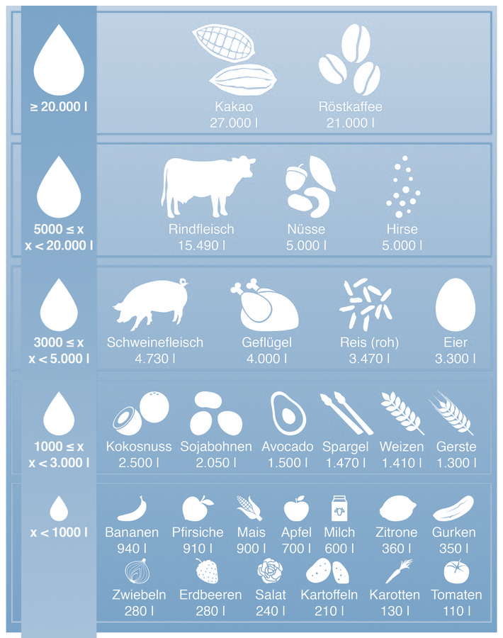

Wasser
Weltweit werden 70 Prozent des vom Menschen genutzten Wassers
in der Landwirtschaft verbraucht. Wie groß der Bedarf für einzelne Produkte ist, hängt von vielen Faktoren
ab – vor allem vom Standort. In der Regel liegt der Wasserverbrauch für die Erzeugung tierischer
Lebensmittel deutlich höher als beim Anbau pflanzlicher Nahrung. Aber die verbrauchten Wassermengen allein
sagen noch nichts über die Nachhaltigkeit der Erzeugung aus. Entscheidend ist letztlich, woher das Wasser
kommt.
Vereinfacht gesagt gibt es zwei Wasserquellen in der Landwirtschaft, die man als blaues oder grünes Wasser
bezeichnet. Blaues Wasser stammt aus Flüssen und Seen oder aus dem Grundwasser. Es wird zur Bewässerung
einzelner Kulturen und zum Tränken der Tiere genutzt.
Grünes Wasser umfasst natürliche Niederschläge wie Regen oder Schnee. Der Boden speichert einen Teil dieser
Niederschläge und die Pflanzen nehmen es in der Wachstumsphase auf. Im Gegensatz zum blauen Wasser wird das
grüne Wasser ständig auf natürlichem Wege nachgeliefert. Die Landwirtschaft entzieht es nicht dem
natürlichen Kreislauf. Deshalb ist ein hoher Anteil an grünem Wasser gut für die Wasserbilanz eines
Lebensmittels und blaues Wasser eher ungünstig.
Die Menge an grünem Wasser ist allerdings je nach Klimazone sehr unterschiedlich. So verbrauchen
Landwirtinnen und Landwirte in Deutschland dank unseres Klimas beim Anbau von einem Kilogramm Weizen nur
etwa 40 Prozent der Wassermenge (1.440 Liter), die weltweit dafür benötigt wird. Mit 465 Litern Wasser wird
dieses Getreide nach Angaben des Water Footprint Network in der Slowakei am effizientesten und in Somalia
mit 18.000 Litern am aufwändigsten produziert.
Wasserverbrauch für den Anbau von Lebensmitteln

Quellen:
Bundesanstalt für Landwirtschaft und Ernährung (BLE),
food-monitor, Informationsdienst für Ernährung